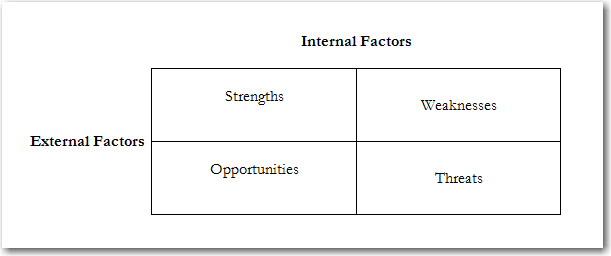
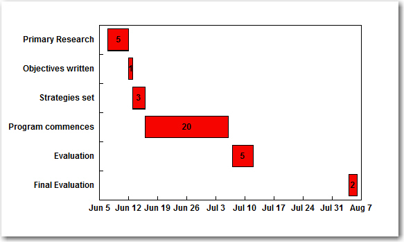

This process is primarily composed of four steps: using research to define the problem or situation, developing objectives and strategies that address the situation, implementing the strategies, and then measuring the results of the public relations efforts. Sometimes acronyms, such as John Marston’s RACE (research, action planning, communication, evaluation) or Jerry Hendrix’s ROPE (research, objectives, programming, evaluation) are used to describe the process.Marston (1979). You’ll notice that that the process always starts with research and ends with evaluation.
Although it is easier to remember such acronyms, the four steps are essentially the following:
The first step in the process is analyzing the problem or opportunity. This involves research, either formal or informal, to gather information that best describes what is going on. Research used to understand the situation and help formulate strategies is called formative research.
For example, a natural gas company may be considering the route for a new pipeline. It must conduct research to understand what possible obstacles it might face. Are there any environmentally protected or sensitive regions in the area? Are there strongly organized neighborhood groups that might oppose the project? What is the overall public support for natural gas and transportation pipelines? Community relations professionals are very familiar with the NIMBY (Not In My Back Yard) sentiment. Additionally, are there acceptable alternatives to the pipeline construction? Alternative routes? Alternative drilling procedures? Alternative construction times? All of these questions should be considered before the first shovel breaks ground.
According to Cutlip, Center, and Broom, research “is the systematic gathering of information to describe and understand situations and check out assumptions about publics and public relations consequences.”Cutlip, Center, and Broom (2006). Much of this information may already exist and may have been collected by other agencies. Research that has previously been conducted is called secondary research. For example, the Interstate Natural Gas Association of America has conducted surveys on public opinion and communication practices of pipeline companies. Research on NIMBY and other social behaviors is also available through a review of academic and professional literature. Secondary sources are the least expensive way to gain background knowledge.
However, you may need to conduct primary research or data you collect yourself for your purposes. You may need to conduct interviews or focus groups with neighborhood associations or environmental groups. You might consider surveys with homeowners and business that might be located near the pipeline (see Chapter 8 "Public Relations Research: The Key to Strategy"). There are many different methods to collect the data that is needed to fully understand the situation. Analysis of previous news stories about pipelines in this region would give you a good idea about the way this story might be framed by media. Another analysis of blogs and other social media about pipelines also would be a good idea. Again the purpose for gathering the information is to help with understanding the situation.
A very popular tool for analyzing situations is the SWOTA four-part tool used for analyzing situations; it consists of strengths, weakness, opportunities, and threats. (strengths, weaknesses, opportunities, threats) analysis. This breaks down a situation by looking at the internal and external factors that might be contributing to the situation before developing strategies. The internal factors are the Strengths and Weaknesses of the organization. The external factors are the Opportunities and Threats existing in the organization’s environment (see Figure 9.1 "SWOT Analysis").
Figure 9.1 SWOT Analysis
The first step is to look internally at the strengths and weakness of the organization. For example, the energy company may find that it has very strong relationships with members of the media, has good employee morale, is financially sound, and has a culture that values innovation. It may also find that it has weak relationships with environmental groups and neighborhood associations, has a culture that promotes confidence in its decisions (perhaps even bordering on arrogance), and has dedicated few resources in the past toward community relations. This information helps inform the possible strategies it needs to take regarding the construction of a new pipeline.
The external factors, opportunities and threats, are usually the reasons the organization finds itself in the situation. In the case of the energy company, it sees an opportunity to drill into a new methane gas deposit and provide that energy to its clients. To the energy company, this appears to be a win-win situation because it can continue to provide energy to meet the demand of its consumers. However, it also needs to assess the possible threats, which include probable legal actions from opposition groups that could lead to court injunctions. Other threats might include negative coverage of the project by the media, leading to a damaged reputation and lower public support for the project.
After conducting the SWOT analysis, you can couple the internal factors with the external factors to suggest possible strategies.
Once enough data and information has been collected so that you really do understand the core contributing factors and not just the surface conditions, then it is time to write a two-paragraph statement that summarizes the situation. The first paragraph should redefine the situation using the data collected by your research. Highlight the insights gained through formal and informal research. The second paragraph should identify the problems, difficulties, and potential barriers to resolving the issue. These also should have been identified in the research, and the research also should help you recommend solutions to these barriers. For example, the energy company would address the opportunity to provide a new energy source to its customers using innovation and technology for efficient and effective delivery of the natural gas, asking its employees to be ambassadors to the community, and working with the media to tell the positive story of the project. It would also need to identify that previous pipeline projects have been delayed, and in some cases halted, because of the effective opposition of environmental groups and neighborhood associations, and that it needs to improve its efforts with community relations before starting the project.
From the description paragraphs, a succinct one-sentence problem/opportunity statementWithin a situational analysis, a one-sentence statement that identifies and summarizes the consequences of not dealing with a problem or situation. is written that cuts to the core of the situation and identifies the consequences of not dealing with the problem or opportunity. For example, for the hypothetical utility pipeline situation, because environmental and neighborhood groups have been influential in stopping pipeline projects in the past and this pipeline route is planned to go through sensitive regions, the company needs to build better relationships with the community through communication and action that will eliminate or reduce obstacles to building the pipeline.
The strategic plan should be focused on resolving or capitalizing on the situation identified in the problem/opportunity statement. It begins by flipping the problem/opportunity statement into a goal. In the case of the energy company, the goal might be the following: “To use communication and actions that improve relationships with key members of the community in order to successfully complete a pipeline that delivers newly found methane gas to customers.” Notice that there is room for change with the pipeline plans in this goal statement. The end goal is to build a pipeline, and in order to achieve this the company may need to make adjustments to the routes or construction of the pipeline. Care should be taken not to write goals that suggest that the public will do something you want them to do. Because publics cannot actually be controlled, it might set up the organization for failure. Instead, focus should be on what can be done to achieve the goal, such as communicate and act in such a way that earns the consent or endorsement of these publics.
The goal provides the direction for the strategic plan and objectives provide the direction of specific and measurable outcomes necessary to meet the goal. A good objective meets the following criteria: it should be an end and not a means to the end; it should be measurable; it should have a time frame; and it should identify the public for the intended outcome.Anderson and Hadley (1999).
The objectives should advance overall business goals such as increase sales, increase share values, retain employees, improve social responsibility, or reduce litigation. They should also be written within the parameters of possible public relations outcomes. For example, this might look like a good objective:
However, there are many variables that contribute to increased sales of the product that are not under the control of public relations such as price, product quality, and availability. Unless the public relations effort can be isolated to show that it was the variable that moved the needle on sales (such as positive publicity in one market that showed increases to sales while all other elements in the marketing mix remained the same), you may be setting yourself up for failure. And, if sales do increase, you will not be able to take credit for the increase because of the other important variables. You would have to share credit with marketing, quality control, and sales representatives. Public relations can contribute to this larger goal through increased awareness, improved attitudes, and possible consumer trials of the product. Provided that the product is of high quality, reasonably priced, and available to consumers, these activities should contribute to increased sales. So the following might be the reworked objective:
Generally there is a hierarchy to the different levels of objectives. Lindenmann identified three levels of objectives: outputs, outtakes, and outcomes.Lindenmann (2003).
As mentioned previously, output objectives are focused on the effectiveness of meeting strategies such as the number of placed messages in the media, the size of the audience that received the message, the percentage of positive messages that were contained in the stories, and so forth. It is helpful to measure output objectives because they provide a good indicator of how well the strategy has been implemented. However, they are not considered objectives as defined in this section because they are not ends but means to an end. For example, an output objective might read, “Place 30 stories in prominent newspapers about the product in the next 3 months.” This is a means to the end of increasing awareness and could be measured by the output of the message but not the impact of the message. Therefore, output objectives should be relegated to the strategies section.
Outtake objectivesThe objectives within a strategic plan that are focused on increasing awareness, understanding, and retention of the key message points. are focused on increasing awareness, understanding, and retention of the key message points. It is far more important to know that the audience received the message than whether it was sent out. For example, you may send out a message in an employee newsletter that reaches 10,000 employees. You need to be more concerned on the impact that message had than the number of people it reached.
Outcome objectivesThe objectives within a strategic plan that are focused on achieving an end result. These objectives are considered to be the most important and are also the ones most difficult to achieve. are perhaps the most important, but also the most difficult to achieve. For example, let’s say the public relations program is for the state highway patrol to increase awareness of the importance of seatbelt usage and the objective is to decrease the number of fatalities caused by not using a seatbelt. There is a diffusion process that occurs with adoption of this behavior. First, drivers need to be aware and understand the safety advantages of seatbelts. Next, they need to have a positive attitude about wearing seatbelts. Finally, this positive attitude will hopefully translate to increased use of seatbelts. However, because people are not always the rational beings we would like them to be, there is a declining measure of success at each level. People who know what is good for them do not always like it. “But seatbelts are uncomfortable.” “What if the seatbelt traps me in the car after an accident?” “Seatbelts wrinkle my clothes.” Even if someone has a positive attitude toward an issue, they may still not behave congruently with the attitude. It could be out of habit, laziness, or dysfunction. So to increase behaviors by 30%, attitude needs to increase by a higher level (50%) and awareness by an even higher level (80%).
Once the goal of the public relations program and measurable objectives have been established, it is time to turn attention to strategies. Strategies provide the means by which objectives are reached. There are certain elements that should be included in this step. First, identify what is trying to be accomplished with each public (tie the strategy to an objective). Second, segment audiences based on common characteristics. Third, create communication strategies that are focused on the self-interests of the publics. And, fourth, identify how publics will be reached with messages or actions.
Too often public relations programs have been primarily tactical and have skipped the strategic step of creating objectives. Public relations professionals are doers and often want to get to the action first. However, too many tactics have been executed because of tradition (“We always send out press releases”) than because of strategy. What makes public relations strategic is having the action tied to the real needs of the organization. If you come up with a really clever tactic but it does not help meet any objectives it should be seriously reconsidered. Far too many resources often are wasted on creative tactics and fall short of addressing the needs of the issue. At the same time, brainstorming on strategies may lead to a legitimate idea that was not considered during the objectives phase, and it may require reevaluating the objectives. But if a strategy cannot be tied to an essential outcome, then it should not be executed.
All groups within publics should be differentiated based on common characteristics such as demographics, geographics, or psychographics. DemographicsThe statistical data of a population, such as gender, age, ethnicity, and income. include variables such as gender, income, level of education, and ethnicity. Females may be connected to the issue very differently than males. College graduates may have different attitudes than high school graduates. GeographicsThe categorization of a population by their location. describe your public by their location. People living within a thousand feet of a pipeline may have different attitudes toward energy companies than those who live a mile or farther from those lines. PsychographicsThe segmentation of a population based on their attitudes, tastes, values, and lifestyles. segment your audience based on their values and lifestyles. People who are single, adventurous, drive fast cars, and spend a lot of their income on entertainment may have very different opinions about seatbelts than people who have small children, drive minivans, and invest most of their money on securities. It is important to segment your key publics because it will help you identify their self-interests. (See Chapter 7 "Identifying and Prioritizing Stakeholders and Publics" for more information on identifying and prioritizing publics.)
People pay more attention to communications that are tied to their values, needs, and goals. You should ask yourself what your publics value and care about (based on research). Knowing the demographic, geographic, and/or psychographic differences of key publics, you can create a message that connects them to your program. For example, for young adventurous drivers you may want to show how seatbelts allow them to have more fun by showing how someone on a curvy road stays snug in the seat, whereas someone without a seatbelt is sliding around and has less control. Meanwhile, a soccer mom would be more interested in seatbelt safety messages geared toward children. Once the self-interests have been identified, a primary message can be created that will give direction to the communication efforts. These can become slogans if they are clever and effective enough. The “Click it or Ticket” campaign uses the threat of police monitoring to encourage compliance. For the young adventurous drivers it might be more effective to have a message from sports adventurists such as race car drivers or stunt drivers explain how they rely on seatbelts.
The last element in the strategy is identifying the channel or medium through which you can reach target publics. The channels can be mass media, such as newspapers or television or radio programming. They can be transmitted by other mediated channels such as e-mail, blogs, or Twitter. They can also be town hall meetings, mediated slide shows, and face-to-face (interpersonal) communication. Sometimes the channel is a group of people, usually opinion leaders, such as teachers, scientists, doctors, or other experts. For example, if we wanted to reach parents in our seatbelt campaign, information kits could be sent to teachers to use in classrooms with students. These materials could be designed to take home and complete with parents. The messages found in these kits could be supported with billboards and radio public service announcements, reaching parents while they are driving. Usually the target audience is reached through multiple points of contact to reinforce the message.
So the following could be one strategy for the seatbelt campaign: “Appeal to young parents’ concern for family safety through educational materials that require interaction between parents and their children enrolled in elementary schools.” Often, there are several strategies for each public and for each objective.
The most creative element in the strategic planning stage is the tactic. Tactics are the specific communication tools and tasks that are used to execute the strategy. In the case of the seatbelt campaign, the tactics would be the elements found in the educational kit, such as crossword puzzles, coloring books, or interactive games. They would also be the billboards, public service announcements, Internet Web sites, social media applications, and other materials. The challenge is to create tactics that cut through the clutter of all the messages competing for the audience’s attention. A great deal of brainstorming takes place during this stage to develop the most creative and clever messages, designs, and activities. However, there is also the temptation to get carried away with the creativity and lose sight of the tactics’ purposes. A cardinal rule is to always evaluate your tactics within established strategies and objectives.
The best public relations programs include both communication and action. The old adage “actions speak louder than words” is as true for public relations as it is for other business disciplines. Sometimes an organization needs to act, or react, before it can communicate. For example, if employees are not attending training seminars it might not be enough to try more creative and persuasive messages. The seminars might need to be more relevant and interesting for the employees providing something to communicate that might change behaviors. Organizations should not only expect stakeholders to behave in ways that benefit the organization; sometimes the organization needs to change its actions and behaviors to improve these critical relationships.
Two additional components to the public relations process usually are developed during the communication and action stage: the planning calendar and the budget. Once the tactics have been determined it is best to plan the development and execution of the tactics using a calendaring tool such as a Gantt chart (see Figure 9.2 "Sample Gantt Chart (Numbers Within Bars Are Days to Accomplish Task)"). A Gantt chart is a horizontal flow chart that provides a graphic illustration of when tasks should begin and end in comparison to all other tasks.
Figure 9.2 Sample Gantt Chart (Numbers Within Bars Are Days to Accomplish Task)
The costs for developing, distributing, and executing the tactics should also be determined. You might want to start with the wish list of all tactics and pare them down to those that will provide the greatest return on investment. Some tactics may fall by the wayside when you project their costs against their potential of meeting your objectives.
According to Paine, four concerns should be addressed when evaluating the effectiveness of a public relations campaign:
If you have followed the steps in the public relations process then you have already identified your audiences and established objectives for each. If your objectives are measurable then you already have the criteria by which to evaluate the success of your program. If you set the objective of increasing awareness by 40% then a benchmark has been set against which to measure. The benchmark compares your current situation to your past. Paine also recommends comparing the data gathered to other organizations, such as key competitors. Comparative analysis makes the data much more relevant. Instead of knowing how much press coverage has been achieved; it can be compared to how much the competition is getting to determine what is called share of voiceThe percentage of a population reached by a public relations or marketing campaign..
Based on this evaluation, the tools that will best help measure against stated criteria are selected. Generally, the same tools that helped establish the benchmark data are used. If primary research was used to establish benchmarks then the same methods are repeated to evaluate success. If you surveyed employees to establish awareness and attitude benchmarks, then a follow-up survey is the obvious measurement tool. If you used attendance at employee meetings to establish behavior benchmarks, then counting attendance after the public relations program is the appropriate measurement tool. As noted previously, primary research is the most expensive and requires the most expertise, but it is the best measure of the real impact of a public relations effort on stated outcome objectives, such as changes in awareness, attitudes, and behavior.
Probably the most popular evaluation tools used in public relations measure the output objectives. There are several ways to measure the effectiveness of communication output, but some are better than others. One of the earliest methods was clip countingA tool for measuring output objectives. Elements such as articles, broadcast stories, and online messages that mention a company or product are counted. This method is simple and convenient, but it is not informative because it only provides a count and not an evaluation of the output.. A clip is an article, broadcast story, or online message that mentions the company or product. You can either hire a clipping service or collect your own clips. At the end of a predetermined period, the number of clips obtained is examined. This measure is the most simple and convenient way to measure output and is one way to monitor media coverage. It is also the least informative because you do not know what the clips mean (they are only counted, not evaluated) except that, perhaps, it has stroked the egos of some senior management by getting their names in the media.
Many public relations measurement services will analyze media coverage to evaluate the percentage of articles that contain program key messagesThe most primary messages that advance an organization's mission., the prominence of the message (for a press release, whether it was printed on page 1 versus page 16; in a broadcast, how much time was allocated to the story and where it appears in the program), the tone of the message (positive, neutral, negative), and how the media efforts compare with key competitors (share of voice). These organizations provide metrics that help establish benchmarks pertaining to program output objectives and strategies. However, to know if these communications actually affected people’s awareness, understanding, attitudes, or behaviors, primary research such as surveys needs to be conducted.
Evaluation and measurement should not take place only at the end of your efforts. You should be monitoring the media constantly to determine whether your message is available for people to see (what advertisers call “reach,” public relations professionals call “opportunities-to-seeThe range of effective action related to a public relations campaign; abbreviated as OTS. Analogous to what advertisers refer to as reach.,” or OTS). If the media strategy is not working, course corrections in the middle of the program are required, not after the program has been completed.
Although sophisticated measures of communication output have been developed over the years, it is still more critical to consider the outtake and outcomes of those messages. Getting the communication into various channels, be they traditional or new media, is only the means to the end of affecting attitudes, opinions, and behaviors. The outcomes need to be measured in order to tie back to organizational goals and purposes.
Cost comparisons between public relations and advertising messages are not generally used or encouraged as an evaluation tool because of the difficulty in measuring the actual impact of these messages. However, we do know that although public relations and advertising generate the same amount of product awareness, brand recall, and purchase intention, public relations content produces higher levels of product knowledge and positive product evaluation than advertising.Stacks and Michaelson (2009), pp. 1–22.
To measure attitudes and opinions, the most popular tool remains the survey. Public opinion polls and attitude surveys can be conducted and compared to benchmarks to determine whether the messages and behaviors of an organization have had the intended effect. Intentions to behave and preferences for purchasing can also be measured through surveys, providing some figures on people’s inclinations.
Behaviors can also be measured against benchmarks. Increases in employee retention, increased donations, and improved sales and investments could all be used to measure behaviors. Often the connection between communication strategy and behavioral changes could be due to other variables, so it is important to isolate and track the impact of the public relations efforts in order to evaluate whether they are the driving force in the change.